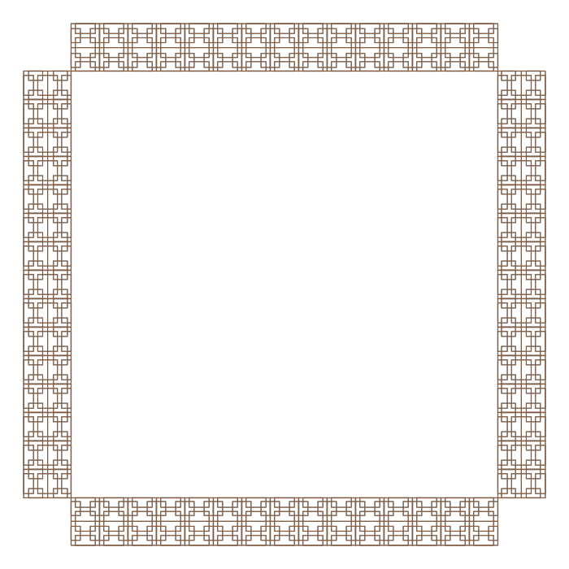
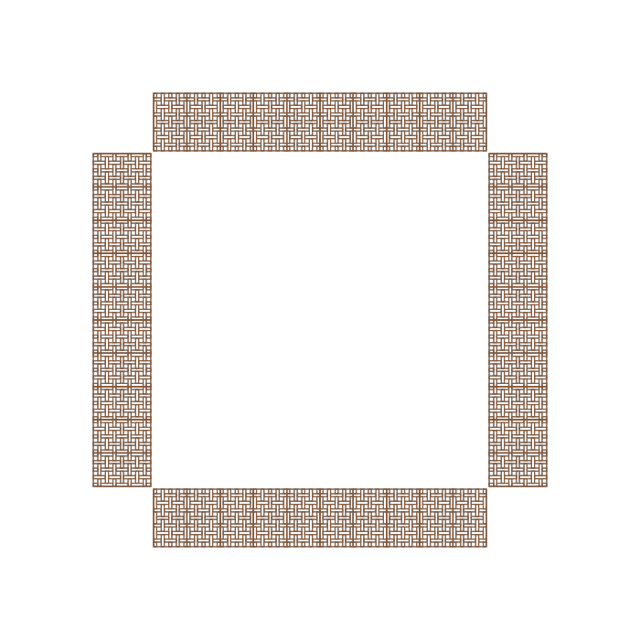

风雨桥是南方山区常见的桥廊结合的桥梁：桥身之上覆以廊屋， 既供通行，也为行人遮风避雨、歇脚聚谈。富川瑶族风雨桥群是其中保存较为完整、 数量较为集中的一处，现存 27 座，2013 年整体列入第七批全国重点文物保护单位。
群内最有名的一对是回澜桥与青龙桥，两桥相距不远，当地人合称「阴阳桥」。 回澜桥为三孔石拱，青龙桥为单孔石拱，一多一少、一阴一阳。
回澜桥位于富川县朝东镇油沐村与沐笼村之间的黄沙河上， 始建于明万历三十年，明崇祯十四年（1641 年）重修，桥长 37.54 米。
富川瑶族风雨桥群现存 27 座，2013 年列入第七批全国重点文物保护单位。回澜风雨桥由三孔石桥、桥廊、桥亭与阁楼组成。桥名取自韩愈《进学解》「会百川而东之，回狂澜之即倒」。


风雨桥是南方山区常见的桥廊结合的桥梁：桥身之上覆以廊屋， 既供通行，也为行人遮风避雨、歇脚聚谈。富川瑶族风雨桥群是其中保存较为完整、 数量较为集中的一处，现存 27 座，2013 年整体列入第七批全国重点文物保护单位。
群内最有名的一对是回澜桥与青龙桥，两桥相距不远，当地人合称「阴阳桥」。 回澜桥为三孔石拱，青龙桥为单孔石拱，一多一少、一阴一阳。
回澜桥位于富川县朝东镇油沐村与沐笼村之间的黄沙河上， 始建于明万历三十年，明崇祯十四年（1641 年）重修，桥长 37.54 米。
以回澜桥为例，其形制为石桥、桥廊、桥亭、阁楼四者的组合： 下部为石砌拱桥，上部沿桥身建廊，廊间起亭，亭上再叠阁楼， 屋面多为歇山顶，檐角起翘。
桥身下部为石拱，上部为木构廊屋，两种材料在立面上分成两层。桥址多选在水流平缓、两岸有村落的河段，便于过往与集散。
富川风雨桥群数量达 27 座，形制上多为「一桥、一廊、一亭」的基本组合， 规模与层数随村落财力与地形而变化。
三孔石拱桥。桥名取自韩愈《进学解》：「会百川而东之，回狂澜之即倒」。 始建于明万历三十年，崇祯十四年重修，桥长 37.54 米。
单孔石拱桥，始建于明天启四年（1624 年）。由单孔石桥、桥廊、桥亭、 阁楼组成，中部设一桥亭，歇山屋顶。与回澜桥俗称「阴阳桥」。
国家文物局已完成「富川瑶族自治县风雨桥群中 27 座风雨桥」的本体平面图、立面图、剖面图及保护矢量图绘制。
2021 年，27 座古风雨桥修缮后首次集齐；2023 年，古桥加装保护设施。
「回澜」取自韩愈《进学解》「会百川而东之，回狂澜之即倒」。
| 内容 | 说明 | 来源 |
|---|---|---|
| 名录级别 | 富川瑶族风雨桥群列入第七批全国重点文物保护单位（2013）；现存 27 座 | 富川瑶族自治县人民政府官网 gxfc.gov.cn |
| 回澜桥形制 | 三孔石桥 + 桥廊 + 桥亭 + 阁楼；桥长 37.54 米；始建明万历三十年，崇祯十四年重修 | 富川县政府官网；公开资料整理（回澜风雨桥） |
| 青龙桥形制 | 单孔石拱，始建于明天启四年（1624 年）；与回澜桥俗称「阴阳桥」 | 富川县政府官网 |
| 桥名典故 | 取自韩愈《进学解》「会百川而东之，回狂澜之即倒」 | 360 百科·回澜风雨桥 |
| 矢量测绘 | 国家文物局已完成 27 座风雨桥本体测绘与保护矢量图绘制（2024-10） | 福建省文物局转载国家文物局信息 |
| 修缮 | 2021 年 27 座古风雨桥修缮后首次集齐；2023 年「披上保护衣」 | 腾讯新闻 2021-10；人民网广西 2023-06 |
| 艺术特征研究 | 《富川瑶乡回澜、青龙风雨桥艺术特征分析》 | 学术文献，需经学校图书馆检索 |
| 群体认知 | #富川回澜风雨桥 单条内容获 16.2 万点赞（2024-11） | 抖音；仅作公众关注度参考，不作学术引用 |
⚠ 早期资料中曾把回澜桥写作「双拱」，与官方档案不符，应以三孔石拱为准。